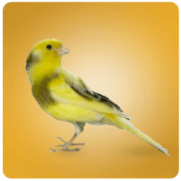
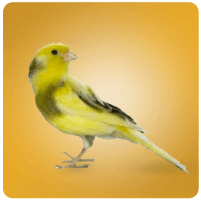

El principal cuidado de higiene básico de un perro es el cepillado diario y el baño periódico. Este baño no puede ser más de una vez al mes y con un champú especial. También es recomendable revisar y limpiar los oídos una vez a la semana.F
volver al inicioPara que el gatito crezca sano es fundamental que su alimento sea de calidad y darle la cantidad adecuada para su tamaño y edad. Es imprescindible que tenga tres recipientes, uno para la comida seca, otro para la comida húmeda y otro para el agua, que debes cambiar a menudo para que esté fresca y limpia.


Los cobayos o cobayas son animales muy sociables que pueden ser grandes compañeros de nuestros hijos, pero requieren muchos cuidados. Es una tentación regalarles un animalito para que se distraigan durante las vacaciones. Es una manera también de enseñarles a ser responsables. Sin embargo, no hay que olvidar que son seres vivos: aunque no puedan expresar hambre o malestar de la misma manera que un gato o un perro, unos cuidados insuficientes afectan a su bienestar físico y emocional. Por tanto, si le regalamos una cobaya a un niño, los adultos hemos de ser también responsables de ella y asegurarnos de que recibe las atenciones necesarias
volver al inicio

La mejor alimentación que le puedes dar a tu ave (sea ninfa, agapornis, canario, yaco, guacamayo, periquito o casi cualquier otro) es el pienso compuesto, esto es, pienso extrusionado en forma de pellets (similar al de los perros y los gatos) pero especialmente formulado para las aves.
volver al inicioLa manera de ofrecer el agua a tu mascota es colocar unas gotas sobre el morro y esperar a que las lama con su lengua. Si lo hace puedes poner más gotas directamente en su boca mientras siga tragándolas. Si no quiere beber de esta manera, tendrás que administrársela a la fuerza. Alimento: Si hay insectos en su hogar, como moscas, mosquitos u otros insectos pequeños, las lagartijas pueden ser atraídas por la abundancia de comida. Son depredadores naturales de insectos. Humedad: Las lagartijas requieren ciertos niveles de humedad para mantener su piel saludable./p>